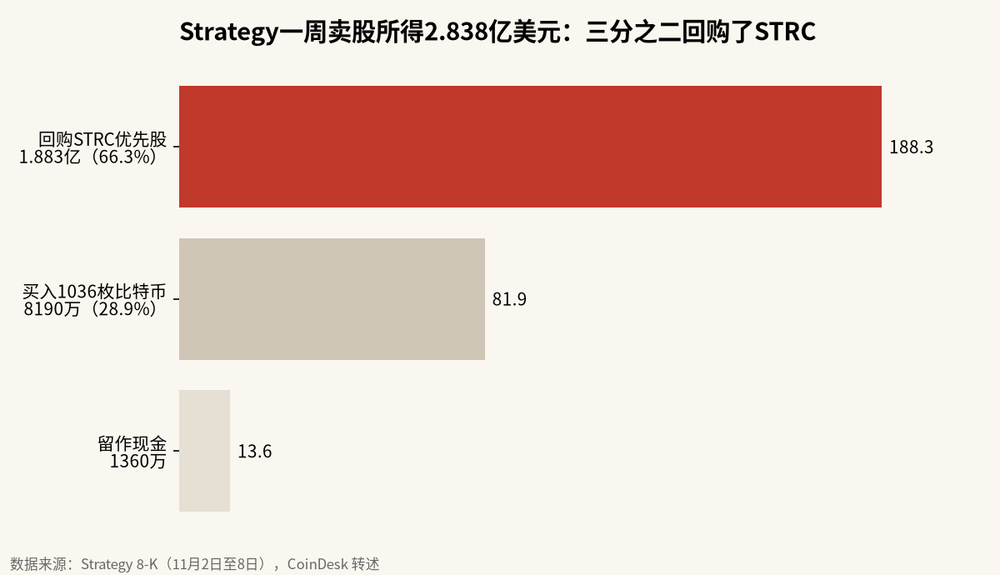

卖股票的钱，三分之二拿去回购优先股：Strategy的买币机器在减速
11月第一周，Strategy卖出约205万股普通股、拿到2.838亿美元，只有8190万美元用来买比特币，1.883亿美元回购了STRC优先股。同一周比特币跌破7.2万美元，MSCI又确认11月30日收盘后把它移出指数。溢价只剩约1.08倍，增发买币这条路越来越窄。
11月2日到8日，Strategy通过按市价增发卖出2,051,348股普通股，净得2.838亿美元。按公司提交的文件，其中1.883亿美元用来回购自家的STRC优先股，只有8190万美元买了1036枚比特币，另有1360万美元留作现金。一家以“卖股买币”闻名的公司，把大部分新钱花在了稳住自己的优先股上。我的判断是：这个模式正在从“扩张”切换到“防守”，而MSCI的剔除和比特币跌破7.2万美元，会让这个切换更快。
一周的钱花到了哪里

按比例算，回购STRC占66.3%，买比特币占28.9%，现金约占4.8%。我顺手算了两个均价：卖出普通股约每股138美元，买入比特币约每枚79,054美元。
同一份文件显示，截至11月8日，Strategy持有约47.7亿美元现金储备，当周从中拿出2110万美元支付优先股股息，没有卖出比特币。按CoinDesk的统计，公司目前持有850,364枚比特币。
回购优先股本身并不奇怪。STRC是Strategy发行的浮动股息优先股，年化股息约12%，价格跌破面值时，公司出手回购，可以稳住这个融资工具的信用。问题在于钱的来源：拿普通股增发的钱回购优先股，等于老股东被稀释，换来的不是更多比特币。
溢价从3.4倍缩到1.08倍
Strategy卖股买币能运转，靠的是溢价，也就是mNAV：公司市值除以所持比特币的价值。
mNAV高于1时，Strategy每卖一股新股，换来的比特币都比这股背后原有的比特币多，老股东“每股含币量”上升。CoinDesk援引的数据是，Strategy的mNAV在2024年11月一度到过3.4倍，现在只剩约1.08倍。BloFin Research说，接近1倍时发新股几乎不增厚，跌破1倍就变成摊薄。
这就是为什么新钱流向了优先股。说白了，普通股的溢价已经不够支撑大规模买币了。
MSCI剔除带来多少被动卖盘
MSCI确认，按10月15日通过的“非经营性公司”新规，将在11月30日收盘后把Strategy移出MSCI美国指数等全球指数。东京上市的比特币储备公司Metaplanet也被移出MSCI日本小盘股指数。
被动卖盘有多大，几家机构的估算差得很远。
| 估算方 | 估算 | 口径 |
|---|---|---|
| Strategy / BloFin Research | 约1300万股，占基本股本约3.1%，约16亿美元 | 跟踪MSCI指数的基金持股，不到一天成交量 |
| 摩根大通（2025年11月） | 约28亿美元流出 | 基于MSCI最初的提案，不是最终规则 |
| 摩根大通（2025年11月） | 约88亿美元 | 假设其他指数商跟进 |
10x Research创始人Markus Thielen认为，这件事早就被预期，大部分已经计入股价，而且很多基金本来就低配。他还说，不会外溢到比特币本身。
我倾向于同意他的前半句，后半句要打个折。16亿美元的卖盘对MSTR来说不到一天的量，可剔除削弱的是以后的被动买盘。按BloFin的说法，失去指数需求会进一步压缩mNAV，增发买币就更不划算。Strategy周四下跌约6%，CoinDesk页面上的收盘价是114.39美元。
比特币跌破7.2万美元
剔除消息叠加的是一个更差的币价环境。
CryptoSlate的数据显示，比特币周四最低跌到71,317美元，是8月以来最低；以太坊最低1,983美元，跌破2000美元。据CoinGlass，24小时全网爆仓约7.27亿美元，比特币爆仓2.938亿美元中91.1%是多头。比特币9月高点在85,500美元上方，到周四低点跌了约16.6%；200日均线在73,200美元附近，币价已经跌到均线下方约2.6%。
市场的解释很杂。MarketWatch把这次下跌归结为AI概念股的抛售和加密市场自身的担忧叠在一起。X上，Ted Pillows说各交易所出现了激进抛售；Peter Schiff则盯着STRC，认为12%的股息需要比特币每年上涨约30%来支撑，而比特币去年跌了6.5%、今年至今跌了17%。⚠️ Schiff的涨跌幅为个人表述，未与行情数据逐一核对。
多头的理由
多头也有自己的理由。Michael Saylor在X上的回应是“让STRC去扛重活”，意思是以后靠优先股来融资。Strategy官方账号则说，银行每周放贷的一小部分，就足以吸收所有新挖出的比特币。
Merlijn The Trader的看法更偏交易：他承认底部那次STRC跌破锚定价让他害怕，比特币也一度刺穿了一条自2019年以来的趋势线，但上一次出现这种情况是2020年新冠时期，那根下影线后来成了这轮周期最好的买点。他说自己已经买入。
这些理由都有一个共同点：它们依赖新的资金愿意进来。优先股要有人买，银行要愿意放贷，下影线要有人接。
防守能撑多久
Strategy的防守能撑多久，先看现金。
把一周的现金流、溢价和指数剔除放在一起看，Strategy的买币节奏已经明显放慢，这一点不需要等到11月30日。47.7亿美元的现金储备能让它在一段时间内付得起优先股股息，也不必卖币，所以短期内被迫抛售比特币的风险不大。
真正的风险在于循环：币价下跌压低mNAV，mNAV压低增发效率，增发的钱又更多流向回购优先股，买币越来越少，市场对“最大买家”的预期随之落空。打破这个循环的信号，是mNAV重新明显高于1倍、STRC回到面值附近，同时比特币收复73,200美元附近的200日均线。要是这三者在12月1日指数调整生效前都没出现，Strategy每周买币的数量还会继续往下走。
免责声明：本文数据来自Strategy文件、CoinDesk、CryptoSlate、MarketWatch等公开报道，比例与均价为按公开数据计算的估算，不构成任何投资建议。
X 上怎么看
结论 · 偏空：比特币破位、指数被动卖盘临近，多头只剩“插针见底”的叙事
▲ 看多4 位
▼ 看空5 位
观点为 X 用户当日公开帖子的中文摘要，忠于原文但有删减；标「未核实」的为预测、个人推测或单一来源说法。立场为人工判断。
数据来源
- 一周融资与用途、现金储备、优先股股息、持币量、mNAV与机构估算来自CoinDesk转述的Strategy文件与分析师观点。
- 比特币与以太坊低点、爆仓数据、9月高点与200日均线来自CryptoSlate；下跌原因的概括来自MarketWatch。
- STRC约12%的股息率与Schiff的涨跌幅为X帖子中的个人表述，未核实。
- 比例、均价与距高点、均线的百分比为按公开数据计算的估算。
- https://www.coindesk.com/markets/2026/11/12/msci-is-dropping-strategy-from-its-index-and-the-exclusion-could-hit-its-bitcoin-buying-machine
- https://www.investing.com/news/stock-market-news/msci-to-drop-strategy-from-global-indexes-putting-billions-in-passive-fund-inflows-at-risk-5020015
- https://www.theblock.co/news/markets/2026-11-11-strategy-metaplanet-lose-msci-index-membership-november-reshuffle-438437
- https://cryptoslate.com/bitcoin-and-ethereum-sink-to-3-month-lows-but-a-bigger-crypto-selloff-may-be-ahead/
- https://www.marketwatch.com/story/bitcoin-tumbles-below-72-000-in-pile-up-of-ai-jitters-crypto-concerns-2nd-update-8e73e266
- https://x.com/saylor/status/2120860530986336551
- https://x.com/Strategy/status/2120901824232538125
- https://x.com/PeterSchiff/status/2120868458460221542
- https://x.com/TedPillows/status/2120892332040188168
- https://x.com/MerlijnTrader/status/2120954789379100765
- https://x.com/Polymarket/status/2120914914613063788
- https://x.com/Polymarket/status/2120885220304126003